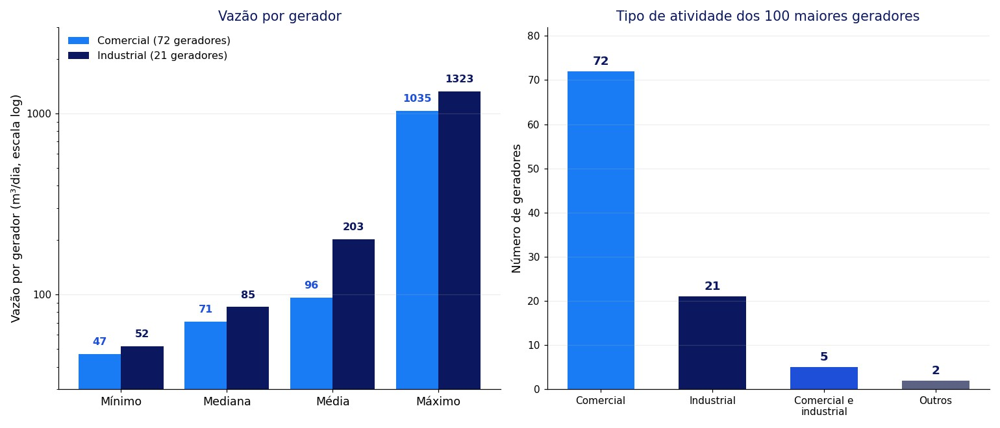
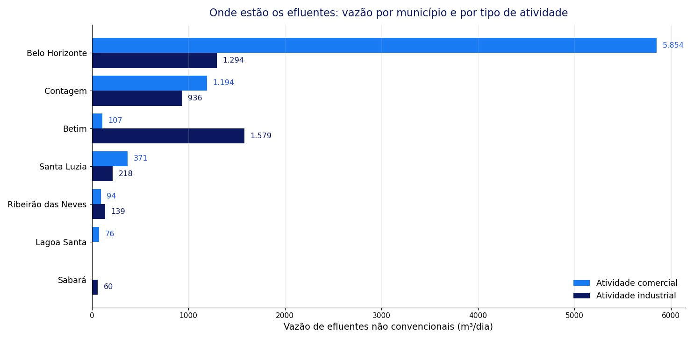
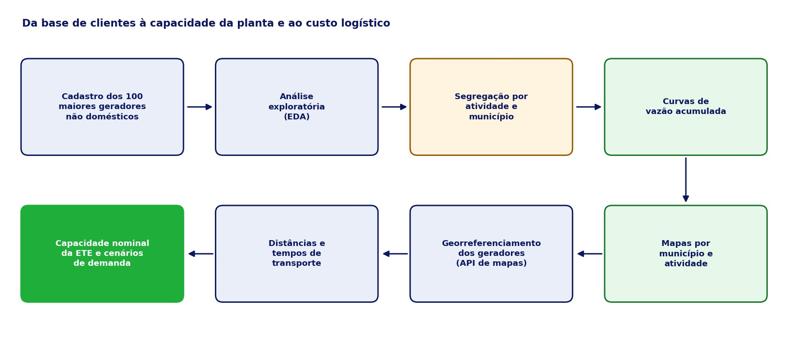
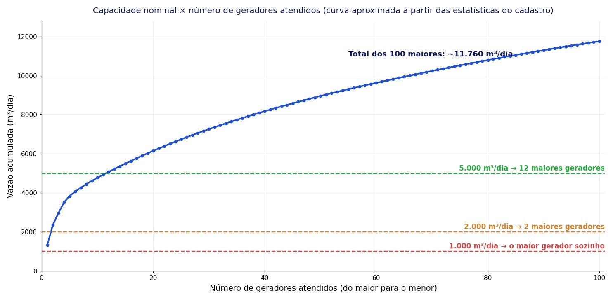
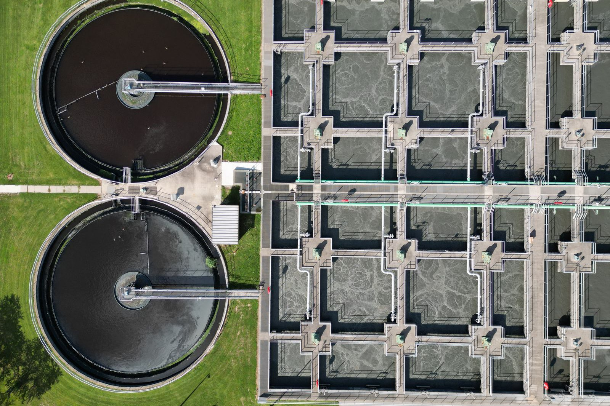
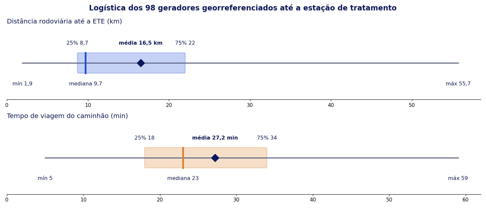
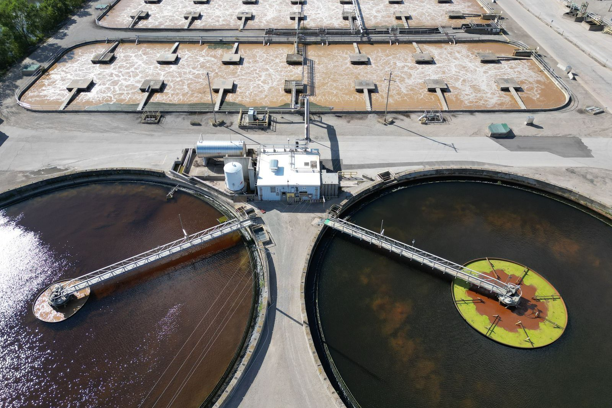
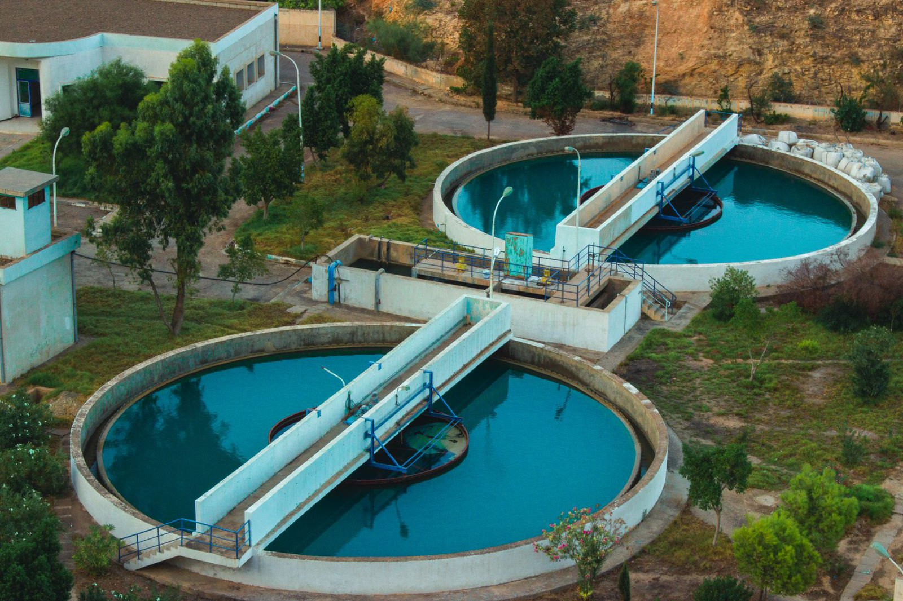

Problema / desafio do cliente
O crescimento econômico de uma grande região metropolitana aumentou a geração de efluentes não domésticos (comerciais e industriais), que precisam de tratamento adequado para cumprir a legislação ambiental. Para planejar uma estação de tratamento que receba esses efluentes, a pergunta central era: qual deve ser a capacidade nominal da planta, e quais geradores ela consegue atender?
Também era preciso saber onde estão os geradores e quanto custa e demora levar os efluentes até a estação, para avaliar a viabilidade logística e econômica do serviço.
Contexto e características do processo
- Cliente: companhia de saneamento que atende a Região Metropolitana de Belo Horizonte (MG).
- Base de dados com os 100 maiores geradores de efluentes não domésticos, distribuídos em 7 municípios.
- Geração somada de cerca de 11.760 m³/dia, com perfis muito diferentes: 72 geradores comerciais (shoppings, centrais de abastecimento, serviços) e 21 industriais (montadoras, siderurgia, metalurgia, alimentos, frigoríficos, têxtil, papel, entre outros).

Diagnóstico e dados analisados
- A distribuição da vazão é muito assimétrica: a mediana é de cerca de 72 m³/dia por gerador, mas a média sobe para 118 m³/dia por causa de poucos grandes geradores, e o maior chega a cerca de 1.320 m³/dia.
- Os geradores industriais são menos numerosos, mas maiores: média de cerca de 203 m³/dia, contra 96 m³/dia dos comerciais.
- Belo Horizonte concentra a maior parte da vazão, sobretudo comercial; Betim e Contagem concentram a vazão industrial.
- A capacidade da planta depende de quais geradores se quer atender: poucos grandes geradores esgotam rapidamente uma planta pequena.

Metodologia utilizada
- Organização do cadastro dos 100 maiores geradores (vazão em m³/dia, município e tipo de atividade).
- Análise exploratória de dados: estatística descritiva, histogramas, assimetria e curtose.
- Segregação por tipo de atividade (comercial e industrial) e por município.
- Curvas de vazão acumulada, do maior para o menor gerador e vice-versa, para simular diferentes capacidades de tratamento.
- Mapas temáticos da vazão por município e por atividade.
- Georreferenciamento automático dos geradores e cálculo de distâncias e tempos de viagem até a estação por API de mapas.

Solução de engenharia desenvolvida
O estudo entregou uma ferramenta de decisão para dimensionar a estação: em vez de um único número, a capacidade nominal passa a ser escolhida a partir das curvas de vazão acumulada, sabendo exatamente quantos e quais geradores cada capacidade atende.

Por exemplo, uma planta de 1.000 m³/dia seria ocupada por apenas dois dos maiores geradores (sem contar os dois excepcionais), ou por cerca de 20 dos menores. Isso orienta tanto a capacidade quanto a estratégia comercial do serviço.
Tecnologias e processos envolvidos
- Python: pandas, NumPy, SciPy, seaborn e matplotlib para a análise de dados.
- Geoprocessamento: GeoPandas e malha municipal oficial para os mapas temáticos.
- Georreferenciamento e roteirização com API de mapas (geocodificação e matriz de distâncias e tempos).
- Mapas interativos com agrupamento de pontos e mapa de calor (Folium).
- Notebooks Jupyter com todo o fluxo, disponíveis publicamente no GitHub.

Modelagem, simulação e ferramentas computacionais
O georreferenciamento de 98 geradores permitiu calcular a distância rodoviária e o tempo de viagem de cada um até a estação de tratamento:

Metade dos geradores está a menos de 10 km e a menos de 25 minutos da estação; os mais distantes chegam a 56 km e cerca de 1 hora de viagem. Esses valores são a base para estimar o custo médio de transporte por m³, otimizar rotas e reduzir riscos e emissões no transporte de efluentes.
O código está no repositório Capacity-estimation-treatment-plant-brazil no GitHub.
Resultados obtidos
- Quantificação da demanda: cerca de 11.760 m³/dia nos 100 maiores geradores, com perfil comercial e industrial bem caracterizado.
- Curvas de capacidade que mostram quantos geradores cada porte de estação consegue atender.
- Mapas da vazão por município e por atividade, que mostram onde está a demanda comercial (capital) e a industrial (eixo Betim–Contagem).
- Logística: distância mediana de cerca de 10 km e tempo mediano de cerca de 23 minutos até a estação, base para o custo de transporte e a otimização de rotas.
- Base técnica para a viabilidade econômica do serviço de recebimento e tratamento de efluentes não domésticos.
CAPEX/OPEX e análise técnico-econômica
Quando aplicável: estimativas de CAPEX e OPEX, comparação entre alternativas, custo por m³ ou por tonelada, payback.
Escopo e responsabilidades da GETA
A GETA foi responsável por:
- organização e tratamento da base de dados dos geradores;
- análise estatística e segregação por atividade e município;
- simulação de capacidades e curvas de demanda;
- georreferenciamento, mapas e cálculo de distâncias e tempos de transporte;
- interpretação dos resultados para o dimensionamento da estação.
Principais entregáveis
- Base de dados tratada dos 100 maiores geradores.
- Relatório de análise exploratória e curvas de capacidade.
- Mapas temáticos por município e por atividade, e mapas interativos dos geradores.
- Matriz de distâncias e tempos de transporte até a estação.
- Notebooks Jupyter (repositório público no GitHub).
Galeria

